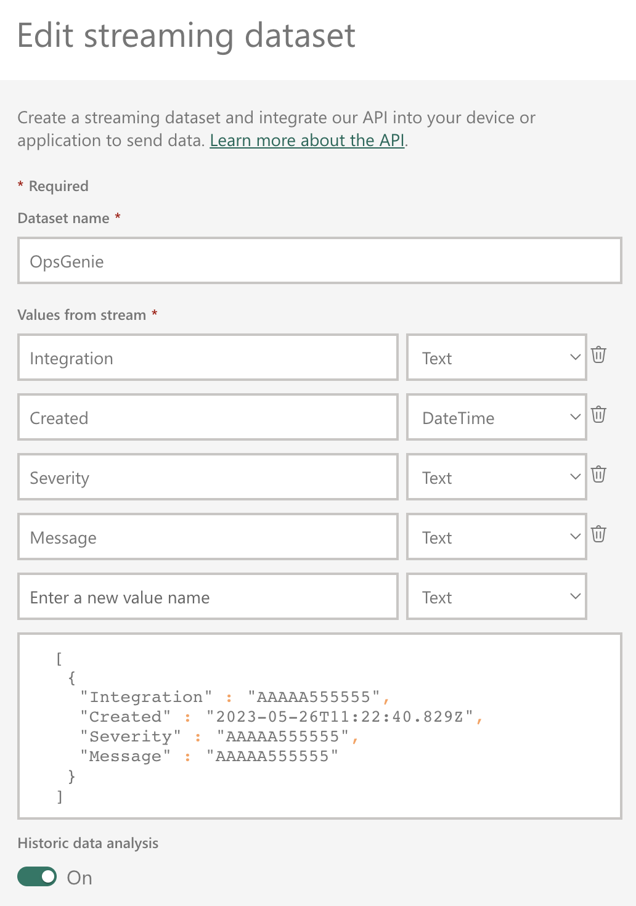
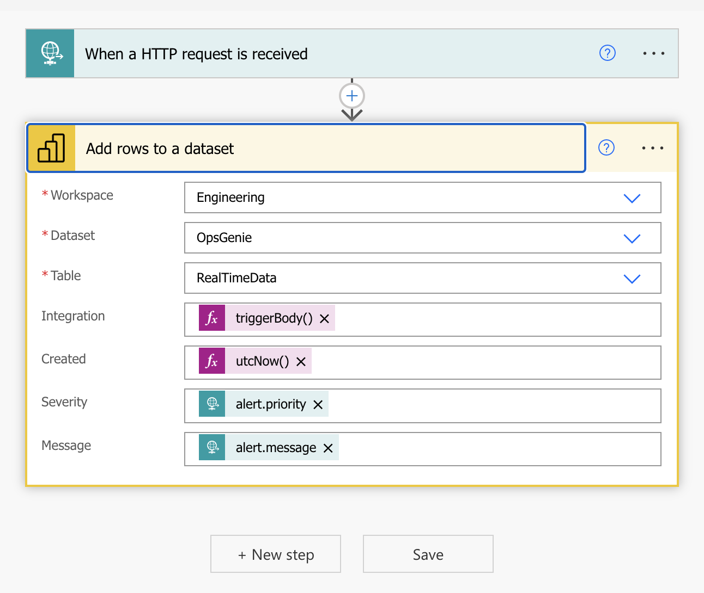
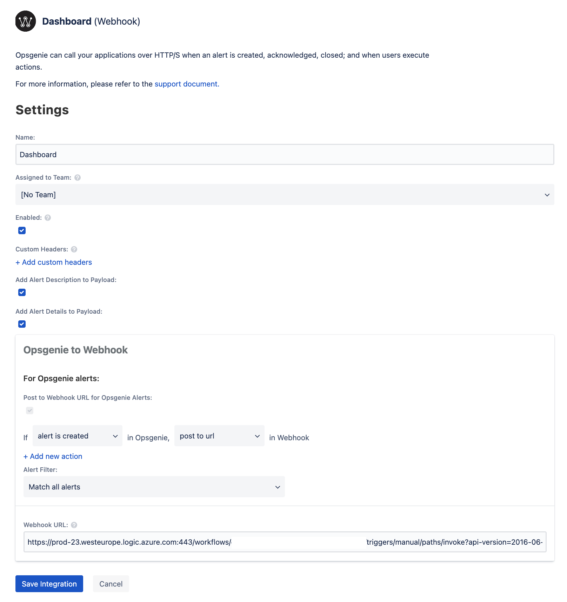
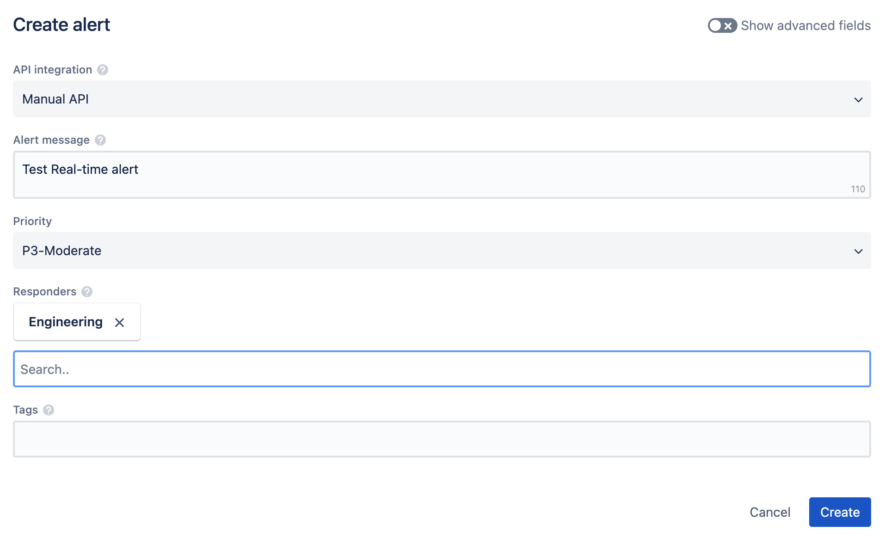
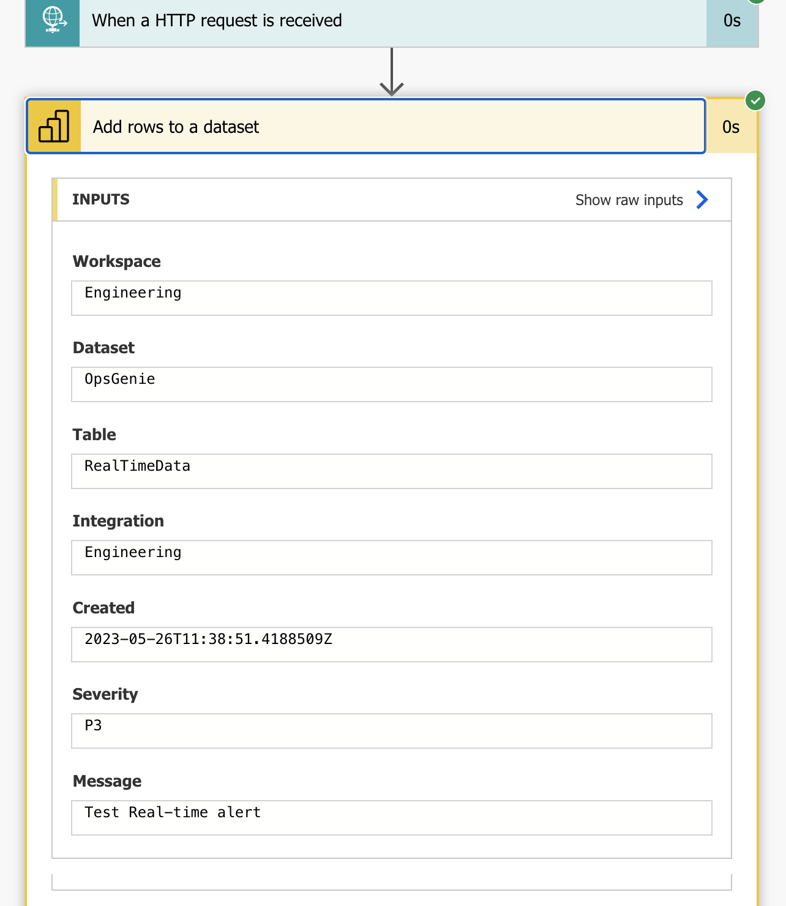
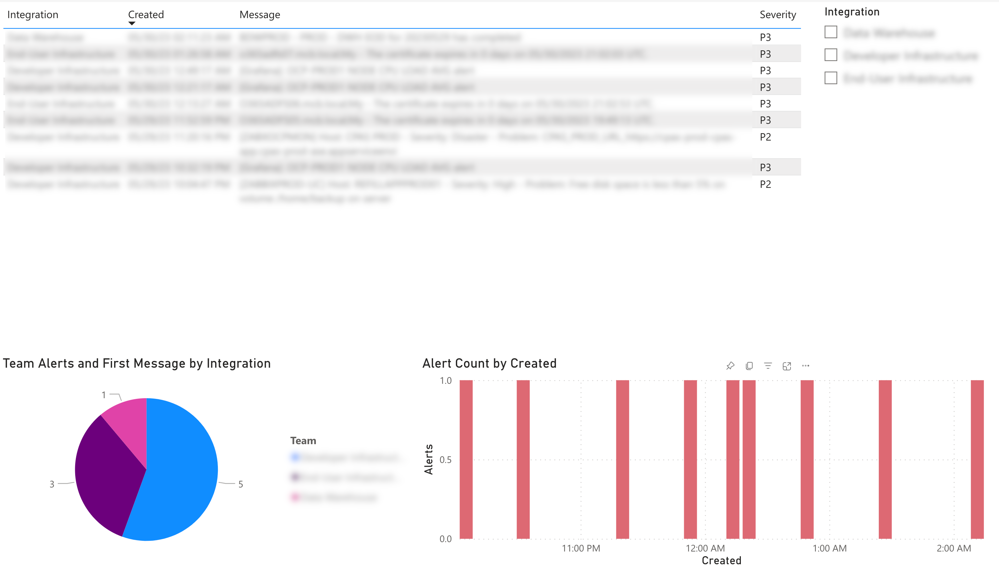

<!DOCTYPE html>


<html lang="en">
  

    <head>
      <meta charset="utf-8" />
       
      <meta name="keywords" content="agile, tdd, software engineering" />
       
      <meta
        name="viewport"
        content="width=device-width, initial-scale=1, maximum-scale=1"
      />
      
        <meta property="og:image" content="https://nickmck.net/2023/06/02/opsgenie-dashboard/og7b.jpg"/>
        <meta property="og:description" content="We needed to visualise alerts from OpsGenie in real-time. Here&#39;s how we did it using PowerBI and Power Automate."/>
        
      <title>Real-time Dashboards with OpsGenie and PowerBI |  nick dot blog</title>
  <meta name="generator" content="hexo-theme-ayer">
      
      <link rel="shortcut icon" href="/favicon.ico" />
       
<link rel="stylesheet" href="/dist/main.css">

      
<link rel="stylesheet" href="/css/fonts/remixicon.css">

      
<link rel="stylesheet" href="/css/custom.css">
 
      <script src="https://cdn.staticfile.org/pace/1.2.4/pace.min.js"></script>
       
<!-- Global site tag (gtag.js) - Google Analytics -->
<script async src="https://www.googletagmanager.com/gtag/js?id=G-KXJW9BVBJ4"></script>
<script>
  window.dataLayer = window.dataLayer || [];
  function gtag(){dataLayer.push(arguments);}
  gtag('js', new Date());
  gtag('config', 'G-KXJW9BVBJ4');
</script>

 

      <link
        rel="stylesheet"
        href="https://cdn.jsdelivr.net/npm/@sweetalert2/theme-bulma@5.0.1/bulma.min.css"
      />
      <script src="https://cdn.jsdelivr.net/npm/sweetalert2@11.0.19/dist/sweetalert2.min.js"></script>

      <!-- mermaid -->
      
      <style>
        .swal2-styled.swal2-confirm {
          font-size: 1.6rem;
        }
      </style>
    <link rel="alternate" href="/atom.xml" title="nick dot blog" type="application/atom+xml">
</head>
  </html>
</html>


<body>
  <div id="app">
    
      
    <main class="content on">
      <section class="outer">
  <article
  id="post-opsgenie-dashboard"
  class="article article-type-post"
  itemscope
  itemprop="blogPost"
  data-scroll-reveal
>
  <div class="article-inner">
    
    <header class="article-header">
       
<h1 class="article-title sea-center" style="border-left:0" itemprop="name">
  Real-time Dashboards with OpsGenie and PowerBI
</h1>
 

      
    </header>
     
    <div class="article-meta">
      <a href="/2023/06/02/opsgenie-dashboard/" class="article-date">
  <time datetime="2023-06-02T10:54:55.000Z" itemprop="datePublished">2023-06-02</time>
</a>   
<div class="word_count">
    <span class="post-time">
        <span class="post-meta-item-icon">
            <i class="ri-quill-pen-line"></i>
            <span class="post-meta-item-text"> Word count:</span>
            <span class="post-count">624</span>
        </span>
    </span>

    <span class="post-time">
        &nbsp; | &nbsp;
        <span class="post-meta-item-icon">
            <i class="ri-book-open-line"></i>
            <span class="post-meta-item-text"> Reading time≈</span>
            <span class="post-count">3 min</span>
        </span>
    </span>
</div>
 
    </div>
      
    <div class="tocbot"></div>


  
    <div class="article-entry" itemprop="articleBody">
       
  

<p>We use OpsGenie for Alert Management. Our intention is to have all alerts surfaced in OpsGenie as this gives us an end-to-end view of what’s happening in the environment. Whilst OpsGenie provides a serviceable user interface and mobile tools one thing it lacks is the ability to build dashboards to visualise the information. This week I built a solution using PowerBI.</p>
<p>There are many ways to do this but I did not want to build something from scratch. Ideally I wanted something that would work with minimal or no code and allow us to easily create new dashboards. Since PowerBI is my go-to for reports and dashboards I wanted to see if there was a way to get it to talk to OpsGenie. Turns out there is, with a little help from PowerAutomate.</p>
<p>Here’s the plan:</p>
<iframe frameborder="0" style="width:100%;height:200px;" src="https://viewer.diagrams.net/?highlight=0000ff&nav=1#R1VZNc5swEP01HNsBZLB7rD%2BaZMadZOpDm6MMG1AiECOEgf76LmYxpjROOuNJnJO1Tytp9%2B3bNRZbJNWV5ln8XYUgLdcOK4stLdd1mO3jT4PULTL1Ji0QaRGSUw9sxG8g0Ca0ECHkA0ejlDQiG4KBSlMIzADjWqty6Pag5PDVjEcwAjYBl2P0pwhN3KIzz%2B7xaxBR3L3s2LST8M6ZgDzmoSqPILay2EIrZdpVUi1ANuR1vLTnvj2zewhMQ2pec2AVBPdCOU%2Fxjy%2BpcB4XVTBdf6Ji5KbuEoYQ8ydTaROrSKVcrnp0rlWRhtDcaqPV%2B6yVyhB0EHwEY2oqJi%2BMQig2iaRdDFjXv%2Bj83rhvjM9eZy6r481lTVYbaxPgsxQQlKtCB3Ai705KXEdgTvixQ6FQ4aASwHjwnAbJjdgN4%2BAktejg11cDF1SQ%2FygO3bvjsqCXbrP8ClIBo6qVsTCwyfg%2B6RJbccg4z7O2OR5E1VSOqNyBNlCdJnOcPB2Yka6psVnXseVRmxAUH3VIh52dLf8jSXlv3YEWmDvo8%2BubvVLf3nvqm430fadKZMO1vyLROEAvQufu5MKE7o1o2xgNPBFpZLm%2BxOfnWyTRj5rVkhueowT%2BJhL%2FjbJmGdRSYAtohr4vkLttm2W9PQA8eIr2LXRbGLwGCM%2FbbnG88xRgYr9cgOlbFmD2rpPGuaxJM%2F0Ik2b670kzv7mEAeP5bzZg0Ow%2FOPd7R5%2FtbPUH"></iframe>

<h1 id="Streaming-Datasets"><a href="#Streaming-Datasets" class="headerlink" title="Streaming Datasets"></a>Streaming Datasets</h1><p>You could create this solution by pushing events from OpsGenie to a database but I wanted something simple and real-time. As it happens, PowerBI provides a facility for this in the form of ‘Streaming Datasets’. Essentially this provides an API for you to push events to and then build reports on top of this store. Events can be real-time only or you can retain the history.</p>
<p>I started by creating a Streaming Dataset with the following fields:</p>


<blockquote>
<p>You can create your Streaming Dataset from your PowerBI workspace by selecting New…Streaming Dataset and follow the prompts.</p>
</blockquote>
<p>Once the Streaming Dataset is created you can post your data my making an API call. For example:</p>
<figure class="highlight bash"><table><tr><td class="gutter"><pre><span class="line">1</span><br><span class="line">2</span><br><span class="line">3</span><br><span class="line">4</span><br><span class="line">5</span><br><span class="line">6</span><br><span class="line">7</span><br><span class="line">8</span><br><span class="line">9</span><br><span class="line">10</span><br><span class="line">11</span><br><span class="line">12</span><br><span class="line">13</span><br><span class="line">14</span><br></pre></td><td class="code"><pre><span class="line"></span><br><span class="line">curl --include \</span><br><span class="line">--request POST \</span><br><span class="line">--header <span class="string">&quot;Content-Type: application/json&quot;</span> \</span><br><span class="line">--data-binary <span class="string">&quot;[</span></span><br><span class="line"><span class="string">&#123;</span></span><br><span class="line"><span class="string">\&quot;Integration\&quot; :\&quot;AAAAA555555\&quot;,</span></span><br><span class="line"><span class="string">\&quot;Created\&quot; :\&quot;2023-05-26T11:24:08.057Z\&quot;,</span></span><br><span class="line"><span class="string">\&quot;Severity\&quot; :\&quot;AAAAA555555\&quot;,</span></span><br><span class="line"><span class="string">\&quot;Message\&quot; :\&quot;AAAAA555555\&quot;</span></span><br><span class="line"><span class="string">&#125;</span></span><br><span class="line"><span class="string">]&quot;</span> \</span><br><span class="line"><span class="string">&quot;https://api.powerbi.com/beta/XXX/datasets/XXX/rows?experience=power-bi&amp;key=XXX&quot;</span></span><br><span class="line"></span><br></pre></td></tr></table></figure>

<h1 id="Power-Automate"><a href="#Power-Automate" class="headerlink" title="Power Automate"></a>Power Automate</h1><p>The next step was to get OpsGenie to update the Streaming Dataset when a new alert was created. Whilst OpsGenie does provide an HTTP Integration it does not allow you to control the request format. I needed something that could format the request and possibly add some additional logic. Not wanting to build a custom service for this I used Power Automate.</p>
<p>This turned out to be quite a simple flow to build. It’s an HTTP trigger which in turn calls the built-in PowerBI connector.</p>


<h1 id="OpsGenie"><a href="#OpsGenie" class="headerlink" title="OpsGenie"></a>OpsGenie</h1><p>Last thing to do was to get OpsGenie to call the Power Automate flow when a new alert is created. This can be done by using the OpsGenie Webhook integration.</p>


<h1 id="Testing"><a href="#Testing" class="headerlink" title="Testing"></a>Testing</h1><p>At this point we have an OpsGenie Webhook integration that will call the Power Automate flow when a new alert is created. This will, in turn, call the PowerBI Streaming Dataset passing a subset of the alert information. Let’s give it a test…</p>
<p>First thing to do - create a Test Alert.</p>


<p>Next check if the alert was received in Power Automate.</p>


<h1 id="Power-BI-Report"><a href="#Power-BI-Report" class="headerlink" title="Power BI Report"></a>Power BI Report</h1><p>At this point the data is waiting in the Streaming Dataset. All that remains is to create a Power BI Report or Dashboard on top of it.</p>
<p>Here’s a simple one I created showing Alerts over time as well as the details and split by team.</p>


<h1 id="Next-Steps"><a href="#Next-Steps" class="headerlink" title="Next Steps"></a>Next Steps</h1><p>At present I get a real-time feed as new alerts are created but I would also want to remove alerts once they are closed on OpsGenie. This would allow me to create a Red-Amber-Green view of the various systems. I think this can be done by adding some additional logic to the Power Automate flow and creating a new Streaming Dataset to store the overall status. Will try this next. </p>
 
      <!-- reward -->
      
    </div>
    

    <!-- copyright -->
    
    <div class="declare">
      <ul class="post-copyright">
        <li>
          <i class="ri-copyright-line"></i>
          <strong>Copyright： </strong>
          
          Copyright is owned by the author. For commercial reprints, please contact the author for authorization. For non-commercial reprints, please indicate the source.
          
        </li>
      </ul>
    </div>
    
    <footer class="article-footer">
       
  <ul class="article-tag-list" itemprop="keywords"><li class="article-tag-list-item"><a class="article-tag-list-link" href="/tags/devops/" rel="tag">devops</a></li></ul>

    </footer>
  </div>

   
  <nav class="article-nav">
    
      <a href="/2023/06/03/link-preview/" class="article-nav-link">
        <strong class="article-nav-caption">Previous Post</strong>
        <div class="article-nav-title">
          
            Adding Link Preview to your Hexo Blog
          
        </div>
      </a>
    
    
      <a href="/2023/05/18/camel-simple/" class="article-nav-link">
        <strong class="article-nav-caption">Next Post</strong>
        <div class="article-nav-title">Unit Testing Camel - A simple example</div>
      </a>
    
  </nav>

  
   
<div class="gitalk" id="gitalk-container"></div>

<link rel="stylesheet" href="https://cdn.staticfile.org/gitalk/1.7.2/gitalk.min.css">


<script src="https://cdn.staticfile.org/gitalk/1.7.2/gitalk.min.js"></script>


<script src="https://cdn.staticfile.org/blueimp-md5/2.19.0/js/md5.min.js"></script>

<script type="text/javascript">
  var gitalk = new Gitalk({
    clientID: '8318211c28156a054b60',
    clientSecret: 'a3e7c2c22e61867951cbca3c52fbcc22f43dcfb8',
    repo: 'BlogComments',
    owner: 'nickmza',
    admin: ['nickmza'],
    // id: location.pathname,      // Ensure uniqueness and length less than 50
    id: md5(location.pathname),
    distractionFreeMode: false,  // Facebook-like distraction free mode
    pagerDirection: 'last'
  })

  gitalk.render('gitalk-container')
</script>

  
   
    <script src="https://cdn.staticfile.org/twikoo/1.4.18/twikoo.all.min.js"></script>
    <div id="twikoo" class="twikoo"></div>
    <script>
        twikoo.init({
            envId: ""
        })
    </script>
 
</article>

</section>
      <footer class="footer">
  <div class="outer">
    <ul>
      <li>
        Copyrights &copy;
        2015-2023
        <i class="ri-heart-fill heart_icon"></i> Nick Mckenzie
      </li>
    </ul>
    <ul>
      <li>
        
      </li>
    </ul>
    <ul>
      <li>
        
      </li>
    </ul>
    <ul>
      
    </ul>
    <ul>
      
    </ul>
    <ul>
      <li>
        <!-- cnzz统计 -->
        
        <script type="text/javascript" src='https://s9.cnzz.com/z_stat.php?id=1278069914&amp;web_id=1278069914'></script>
        
      </li>
    </ul>
  </div>
</footer>    
    </main>
    <div class="float_btns">
      <div class="totop" id="totop">
  <i class="ri-arrow-up-line"></i>
</div>

<div class="todark" id="todark">
  <i class="ri-moon-line"></i>
</div>

    </div>
    <aside class="sidebar on">
      <button class="navbar-toggle"></button>
<nav class="navbar">
  
  <div class="logo">
    <a href="/"></a>
  </div>
  
  <ul class="nav nav-main">
    
    <li class="nav-item">
      <a class="nav-item-link" href="/">Home</a>
    </li>
    
    <li class="nav-item">
      <a class="nav-item-link" href="/archives">Archives</a>
    </li>
    
    <li class="nav-item">
      <a class="nav-item-link" href="/categories">Categories</a>
    </li>
    
    <li class="nav-item">
      <a class="nav-item-link" href="/tags">Tags</a>
    </li>
    
    <li class="nav-item">
      <a class="nav-item-link" href="/Resources">Resources</a>
    </li>
    
    <li class="nav-item">
      <a class="nav-item-link" href="/about">About</a>
    </li>
    
  </ul>
</nav>
<nav class="navbar navbar-bottom">
  <ul class="nav">
    <li class="nav-item">
      
      <a class="nav-item-link nav-item-search"  title="Search">
        <i class="ri-search-line"></i>
      </a>
      
      
      <a class="nav-item-link" target="_blank" href="/atom.xml" title="RSS Feed">
        <i class="ri-rss-line"></i>
      </a>
      
    </li>
  </ul>
</nav>
<div class="search-form-wrap">
  <div class="local-search local-search-plugin">
  <input type="search" id="local-search-input" class="local-search-input" placeholder="Search...">
  <div id="local-search-result" class="local-search-result"></div>
</div>
</div>
    </aside>
    <div id="mask"></div>

<!-- #reward -->
<div id="reward">
  <span class="close"><i class="ri-close-line"></i></span>
  <p class="reward-p"><i class="ri-cup-line"></i>请我喝杯咖啡吧~</p>
  <div class="reward-box">
    
    <div class="reward-item">
      
      <span class="reward-type">支付宝</span>
    </div>
    
    
    <div class="reward-item">
      
      <span class="reward-type">微信</span>
    </div>
    
  </div>
</div>
    
<script src="/js/jquery-3.6.0.min.js"></script>
 
<script src="/js/lazyload.min.js"></script>

<!-- Tocbot -->
 
<script src="/js/tocbot.min.js"></script>

<script>
  tocbot.init({
    tocSelector: ".tocbot",
    contentSelector: ".article-entry",
    headingSelector: "h1, h2, h3, h4, h5, h6",
    hasInnerContainers: true,
    scrollSmooth: true,
    scrollContainer: "main",
    positionFixedSelector: ".tocbot",
    positionFixedClass: "is-position-fixed",
    fixedSidebarOffset: "auto",
  });
</script>

<script src="https://cdn.staticfile.org/jquery-modal/0.9.2/jquery.modal.min.js"></script>
<link
  rel="stylesheet"
  href="https://cdn.staticfile.org/jquery-modal/0.9.2/jquery.modal.min.css"
/>
<script src="https://cdn.staticfile.org/justifiedGallery/3.8.1/js/jquery.justifiedGallery.min.js"></script>

<script src="/dist/main.js"></script>

<!-- ImageViewer -->
 <!-- Root element of PhotoSwipe. Must have class pswp. -->
<div class="pswp" tabindex="-1" role="dialog" aria-hidden="true">

    <!-- Background of PhotoSwipe. 
         It's a separate element as animating opacity is faster than rgba(). -->
    <div class="pswp__bg"></div>

    <!-- Slides wrapper with overflow:hidden. -->
    <div class="pswp__scroll-wrap">

        <!-- Container that holds slides. 
            PhotoSwipe keeps only 3 of them in the DOM to save memory.
            Don't modify these 3 pswp__item elements, data is added later on. -->
        <div class="pswp__container">
            <div class="pswp__item"></div>
            <div class="pswp__item"></div>
            <div class="pswp__item"></div>
        </div>

        <!-- Default (PhotoSwipeUI_Default) interface on top of sliding area. Can be changed. -->
        <div class="pswp__ui pswp__ui--hidden">

            <div class="pswp__top-bar">

                <!--  Controls are self-explanatory. Order can be changed. -->

                <div class="pswp__counter"></div>

                <button class="pswp__button pswp__button--close" title="Close (Esc)"></button>

                <button class="pswp__button pswp__button--share" style="display:none" title="Share"></button>

                <button class="pswp__button pswp__button--fs" title="Toggle fullscreen"></button>

                <button class="pswp__button pswp__button--zoom" title="Zoom in/out"></button>

                <!-- Preloader demo http://codepen.io/dimsemenov/pen/yyBWoR -->
                <!-- element will get class pswp__preloader--active when preloader is running -->
                <div class="pswp__preloader">
                    <div class="pswp__preloader__icn">
                        <div class="pswp__preloader__cut">
                            <div class="pswp__preloader__donut"></div>
                        </div>
                    </div>
                </div>
            </div>

            <div class="pswp__share-modal pswp__share-modal--hidden pswp__single-tap">
                <div class="pswp__share-tooltip"></div>
            </div>

            <button class="pswp__button pswp__button--arrow--left" title="Previous (arrow left)">
            </button>

            <button class="pswp__button pswp__button--arrow--right" title="Next (arrow right)">
            </button>

            <div class="pswp__caption">
                <div class="pswp__caption__center"></div>
            </div>

        </div>

    </div>

</div>

<link rel="stylesheet" href="https://cdn.staticfile.org/photoswipe/4.1.3/photoswipe.min.css">
<link rel="stylesheet" href="https://cdn.staticfile.org/photoswipe/4.1.3/default-skin/default-skin.min.css">
<script src="https://cdn.staticfile.org/photoswipe/4.1.3/photoswipe.min.js"></script>
<script src="https://cdn.staticfile.org/photoswipe/4.1.3/photoswipe-ui-default.min.js"></script>

<script>
    function viewer_init() {
        let pswpElement = document.querySelectorAll('.pswp')[0];
        let $imgArr = document.querySelectorAll(('.article-entry img:not(.reward-img)'))

        $imgArr.forEach(($em, i) => {
            $em.onclick = () => {
                // slider展开状态
                // todo: 这样不好，后面改成状态
                if (document.querySelector('.left-col.show')) return
                let items = []
                $imgArr.forEach(($em2, i2) => {
                    let img = $em2.getAttribute('data-idx', i2)
                    let src = $em2.getAttribute('data-target') || $em2.getAttribute('src')
                    let title = $em2.getAttribute('alt')
                    // 获得原图尺寸
                    const image = new Image()
                    image.src = src
                    items.push({
                        src: src,
                        w: image.width || $em2.width,
                        h: image.height || $em2.height,
                        title: title
                    })
                })
                var gallery = new PhotoSwipe(pswpElement, PhotoSwipeUI_Default, items, {
                    index: parseInt(i)
                });
                gallery.init()
            }
        })
    }
    viewer_init()
</script> 
<!-- MathJax -->

<!-- Katex -->

<!-- busuanzi  -->

<!-- ClickLove -->

<!-- ClickBoom1 -->

<!-- ClickBoom2 -->

<!-- CodeCopy -->
 
<link rel="stylesheet" href="/css/clipboard.css">
 <script src="https://cdn.staticfile.org/clipboard.js/2.0.10/clipboard.min.js"></script>
<script>
  function wait(callback, seconds) {
    var timelag = null;
    timelag = window.setTimeout(callback, seconds);
  }
  !function (e, t, a) {
    var initCopyCode = function(){
      var copyHtml = '';
      copyHtml += '<button class="btn-copy" data-clipboard-snippet="">';
      copyHtml += '<i class="ri-file-copy-2-line"></i><span>COPY</span>';
      copyHtml += '</button>';
      $(".highlight .code pre").before(copyHtml);
      $(".article pre code").before(copyHtml);
      var clipboard = new ClipboardJS('.btn-copy', {
        target: function(trigger) {
          return trigger.nextElementSibling;
        }
      });
      clipboard.on('success', function(e) {
        let $btn = $(e.trigger);
        $btn.addClass('copied');
        let $icon = $($btn.find('i'));
        $icon.removeClass('ri-file-copy-2-line');
        $icon.addClass('ri-checkbox-circle-line');
        let $span = $($btn.find('span'));
        $span[0].innerText = 'COPIED';
        
        wait(function () { // 等待两秒钟后恢复
          $icon.removeClass('ri-checkbox-circle-line');
          $icon.addClass('ri-file-copy-2-line');
          $span[0].innerText = 'COPY';
        }, 2000);
      });
      clipboard.on('error', function(e) {
        e.clearSelection();
        let $btn = $(e.trigger);
        $btn.addClass('copy-failed');
        let $icon = $($btn.find('i'));
        $icon.removeClass('ri-file-copy-2-line');
        $icon.addClass('ri-time-line');
        let $span = $($btn.find('span'));
        $span[0].innerText = 'COPY FAILED';
        
        wait(function () { // 等待两秒钟后恢复
          $icon.removeClass('ri-time-line');
          $icon.addClass('ri-file-copy-2-line');
          $span[0].innerText = 'COPY';
        }, 2000);
      });
    }
    initCopyCode();
  }(window, document);
</script>
 
<!-- CanvasBackground -->

<script>
  if (window.mermaid) {
    mermaid.initialize({ theme: "forest" });
  }
</script>


    
    

  </div>
</body>

</html>